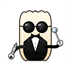

Prime DentalPrime Dental is practice-management software for dental clinics, made by Dr. Saad Nazir ("we", "us", "our"). These terms are the agreement between us and the clinic or person who installs or uses the software ("you", "the clinic"). By installing, activating or using Prime Dental you accept these terms. If you do not accept them, do not use the software.
We grant you a non-exclusive, non-transferable licence to install and use Prime Dental on the computer(s) your licence covers, for running your own dental clinic. A licence is tied to a specific computer and is activated by exchanging a short activation code with us (for example on WhatsApp). The code identifies the computer and contains no patient data.
Prime Dental is offered with a free trial period so that you can evaluate the full software with your own clinic before paying. After the trial, continued use needs a paid licence. We will tell you the current fee and the licence period before you pay.
No refunds. Because the free trial lets you test the software fully before buying, licence fees are non-refundable once paid. If the software stops working because of a fault on our side during a paid licence period, contact us and we will try to put it right (see section 7).
When a licence period ends, the software stops running until it is renewed. Your data is not deleted by this — it stays on your computer and in your own backups (see section 3).
Everything you enter — patients, visits, notes, prescriptions, payments, appointments, stock and registers — is stored on your own computer. We do not hold your clinic or patient data and cannot see or recover it. How we handle the limited information that does leave your computer (such as an optional Google Calendar connection or voice dictation) is explained in our Privacy Policy.
You are responsible for your backups. Prime Dental can write backups to a folder you choose, but keeping safe, working, off-computer backups is your responsibility. We are not responsible for data lost to hardware failure, theft, accidental deletion, a damaged or missing backup, Windows problems, or other causes outside the software. Test your backups regularly.
You are responsible for the patient data you record, for obtaining any patient consent your local rules require, and for using the software in line with the laws and professional obligations that apply to your clinic.
Prime Dental helps you record and organise clinical information. It does not practise dentistry. All diagnoses, treatment decisions, prescriptions, and clinical judgements are yours. Any suggestion, default, calculation, template, reminder or figure the software shows is an aid only, and you must check it against your own clinical judgement and the patient in front of you. We are not responsible for clinical decisions made using the software.
Prime Dental, including its software, design and content, is owned by Dr. Saad Nazir and is protected by copyright. Your licence lets you use the software; it does not give you any ownership of it. You may not:
When your computer is online, the software may check our release page for a newer version and offer to install it. Updates may add, change or remove features and may be needed to keep the software working well. We provide updates at our discretion and do not promise any particular feature, update schedule or future capability.
Support is provided by Dr. Saad Nazir, mainly over WhatsApp (+92 314 4685900), on a reasonable-effort basis during normal working hours in Pakistan. Support covers helping you install, activate, update and use the software, and looking into faults you report. It does not include recovering lost data, clinical advice, or on-site visits. Because the software runs offline on your own computer, we do not promise any particular response time or uptime.
We build and maintain Prime Dental with reasonable care, but the software is provided "as is" and "as available", without warranties of any kind beyond those that the law does not allow us to exclude. We do not warrant that the software will be error-free or uninterrupted, or that it will meet every need of your clinic.
To the fullest extent the law allows, we are not liable for indirect or consequential loss, or for loss of data, profit, revenue or goodwill. Where we are found liable despite the above, our total liability to you for any claim is limited to the licence fees you paid us for the current licence period. Nothing in these terms limits any liability that cannot be limited by law.
If you break these terms — for example by sharing or tampering with a licence, or by not paying for continued use — your licence to use the software may end. Ending a licence does not delete the data already on your computer or in your own backups; that data remains yours.
If these terms change, the new version will be posted on this page with a new date. Continuing to use the software after a change means you accept the updated terms.
These terms are governed by the laws of Pakistan, and the courts of Pakistan have jurisdiction over any dispute about them.
Questions about these terms: Dr. Saad Nazir — WhatsApp +92 314 4685900.